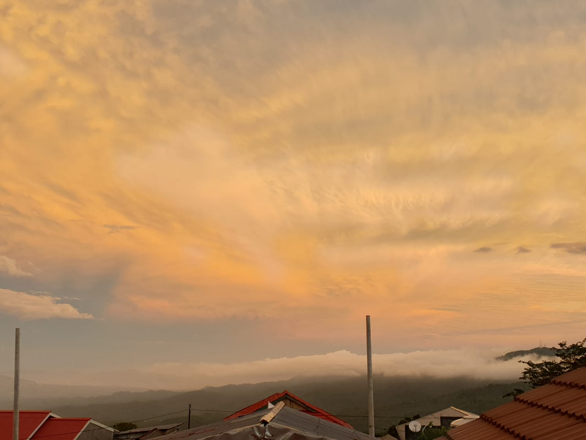
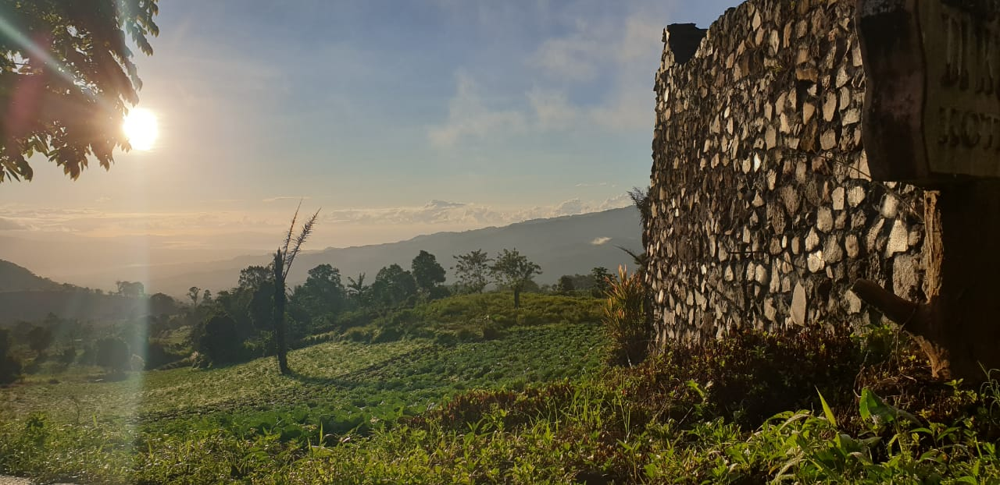

Kelurahan Kumelembuay
Kawasan dataran tinggi dengan pemandangan indah itulah gambaran dari istilah 'Negeri di atas awan'. Kelurahan Kumelembuay menjadi salah satu daerah yang memiliki keindahan alam yang menjadikan kelurahan ini menjadi destinasi wisata di kota Tomohon
Kelurahan Kumelembuay berada di kecamatan Tomohon Timur, Kota Tomohon, Provinsi Sulawesi Utara.Di kelurahan ini ada 3 destinasi wisata yang dapat dikunjungi, yakni tu'ur maasering, puncak tetetana, dan puncak melbyls.
Berada di dataran tinggi membuat pemandangan di Kumel menjadi hal yang menarik saat cuaca cerah maupun saat berkabut. Saat cuaca di Tondano atau bitung berkabut, maka kita dapat melihat awan berada di bawah kelurahan tersebut. Pemandangan ini dapat kita saksikan dari daerah seputaran gereja GMIM BZK.
Jonatan Christian Pangemanan